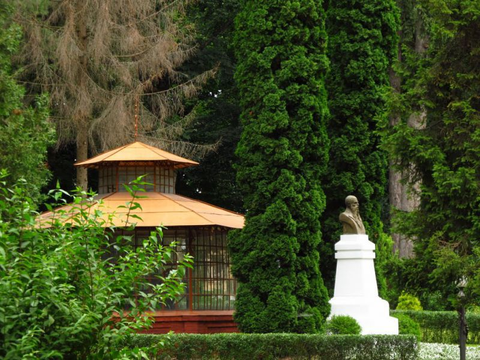
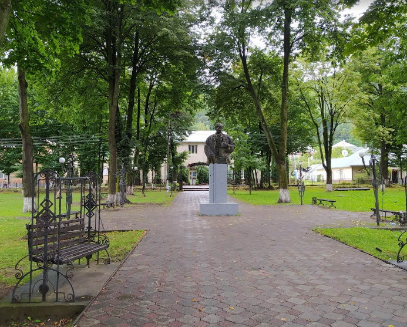

Парк імені Юрія Федьковича
Поблизу головного корпусу Чернівецького національного університету розташований парк імені Юрія Федьковича. Він є чудовим зразком садово-паркового мистецтва. Парк був засаджений ще за правління імператора Франца Йосифа.
На сьогодні він займає чималу територію й служить чудовим місцем для відпочинку. на мапі